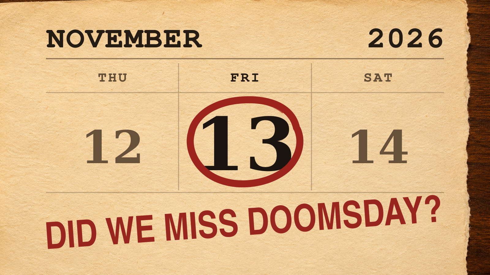

Scientists Predicted “Doomsday” for November 13, 2026. What Went Wrong?

Watch the documentary on YouTube
In 1960, three researchers calculated where world population would be headed if its historical growth continued. We follow the model against decades of demographic data and examine when and why it began to diverge.
Primary sources and data
- Heinz von Foerster, Patricia M. Mora and Lawrence W. Amiot. Doomsday: Friday, 13 November, A.D. 2026. Science 132 (4 November 1960), 1291–1295. DOI 10.1126/science.132.3436.1291.
- Doomsday. Science 133 (24 March 1961). Letters responding to the paper and the authors’ reply.
- Stuart A. Umpleby. World Population: Still Ahead of Schedule. Science 237 (25 September 1987), 1555–1556. Author’s copy hosted by George Washington University.
- United Nations DESA, Population Division. World Population Prospects 2024 and World Fertility 2024.
- United Nations Population Fund. Day of Five Billion, observed on 11 July 1987.
Research and historical context
- Harold M. Schmeck Jr. “Physicist Offers a Doomsday Date.” The New York Times, 4 November 1960, p. 10. Archival headline and page reproduced by Mimikama.
- Walt Kelly. Pogo, Chicago Daily News, 9 December 1960, p. 43, as cited by Umpleby. Contemporary strips reproduced by The Daily Cartoonist. The film presents adapted dialogue in original lettering and speech balloons.
- Biographical sources include The Times obituary, 25 October 2002, excerpted by the American Society for Cybernetics, John Markoff’s obituary in The New York Times, and the Evangelisches Museum Österreich biography. The reason the authors chose 13 November remains uncertain.
- John Cleland. World Population Growth; Past, Present and Future. Environmental and Resource Economics 55 (2013), 543–554.
- Javier A. Birchenall. Demographic “doomsday” misses the mark. Science 394 (8 October 2026), 173–174. DOI 10.1126/science.ael8752.
- Andrey V. Korotayev. Doomsday: Friday, 13 November, A.D. 2026. Cliodynamics 17(2), 1–38. DOI 10.21237/C7clio.68947.
- Kai Kupferschmidt. Will the world end next month? Science said so, in 1960. ScienceInsider, 8 October 2026.
- Further reporting by ABC News Australia and Nautilus.
How we compared the model with the data
We applied the central parameters from equation (11) of the 1960 paper and compared its results with the WPP 2024 world series, accessed through the wpp2024 data package at revision 2da7768. The timing of the crossover depends on the parameters and the convention used for the calendar year.
The graphs distinguish UN historical estimates through 2023 from the UN medium projection beginning in 2024. The global annual percentage growth rate and the number of people added per year are shown as separate series.
Visual credits
- Original diagrams, animations, editorial typography and calculations by Bygone Facts. Illustrative reconstructions include AI-generated imagery. Recreated documents are illustrations.
- Selected excerpts, headlines and publication identifiers from Science, ScienceInsider, The New York Times and ABC News Australia appear in the documentary for analysis and commentary.
- Data from UN DESA, Population Division, World Population Prospects 2024 and World Fertility 2024, CC BY 3.0 IGO. Graphs, selections and calculations by Bygone Facts.
- Natural Earth public-domain map data. Map styling and highlights by Bygone Facts.
- Heinz von Foerster (1963), University of Illinois publicity department. Source: HvF 01.jpg on Wikimedia Commons. License listed at the source: Creative Commons Attribution–ShareAlike 4.0 International (CC BY-SA 4.0). The photograph was scaled and placed in a title card.
- Andrey V. Korotayev’s Cliodynamics article, CC BY 4.0. The on-screen excerpt was cropped and highlighted by Bygone Facts.

Audio credits
- Music by Ovrsoull, “Deep Bass Cinematic Tension Forensic Noir Investigative Pulse”, under the Pixabay Content License.
- Sound effects by TOC1, “Typewriter.aif”, and I.fekry, “traditional stamp.wav”, both CC0 1.0.
Original documentary script with AI-assisted narration.